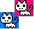

oObjectGroup类的成员函数，获得与碰撞物体相碰的被碰撞物体列表。
void GetCollisionList(oObject* pkObj,vector<oObject*>& kList,bool bCheckImage = false);
参数 pkObj ——指向进行碰撞的对象的指针
kList ——用来存储指向被碰撞对象的指针的列表
bCheckImage ——用来指明是否通过对象上的图片来判断碰撞，true通过图片，false不通过图片，默认不通过图片进行检测
——所有的oObject及派生都被当成普通矩形进行碰撞检测，如果图片是这样，粉色和蓝色部分表示图片是透明的，如果对象的宽高被设置为和图片一样大小，对象位置是这样的，这时如果bCheckImage=false那么就会算发生了碰撞，如果bCheckImage=true那么就不算发生碰撞，因为重叠的只是图片的透明部分
——kList建议使用一个固定的变量可以很大的减小资源浪费
我自己会这样用：
vector<oObject*> g_kCollisionList;//把它作为全局变量或是类的成员变量
……
//进行Cat的碰撞检测
g_kCollisionList.clear();//先清空列表
m_kGroup.GetCollisionList(pkCat,g_kCollisionList,true);//按需要也可设false
int iSize = g_kCollisionList.size();
//如果有碰撞，g_kCollisionList里就会有东西
if (iSize != 0)
{
for (int i = 0;i < iSize;i++)
{
//处理被碰撞的物体
}
}
//再进行Dog的碰撞检测
g_kCollisionList.clear();
m_kGroup.GetCollisionList(pkDog,g_kCollisionList,true);
iSize = g_kCollisionList.size();
//如果有碰撞，g_kCollisionList里就又会有东西
if (iSize != 0)
{
for (int i = 0;i < iSize;i++)
{
//处理被碰撞的物体
}
}